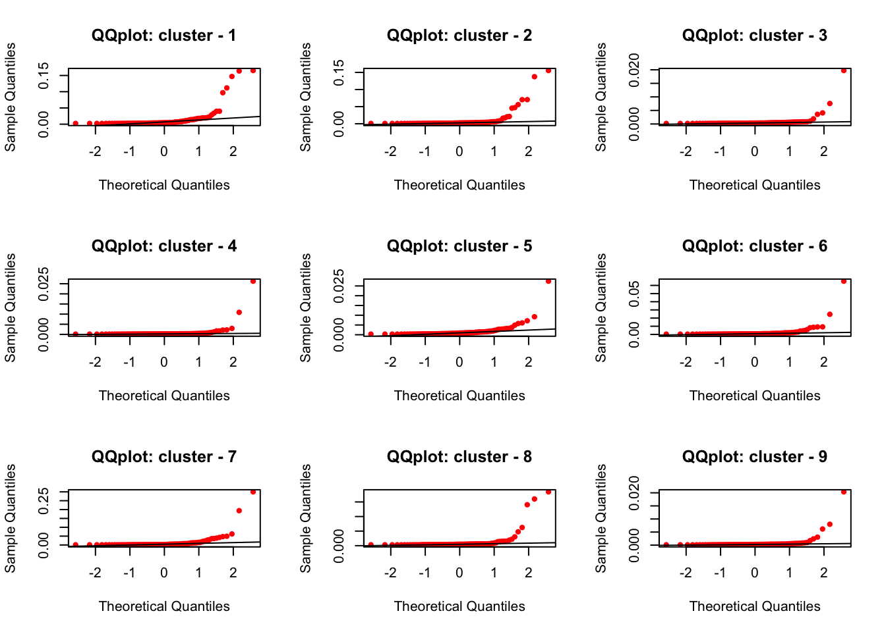
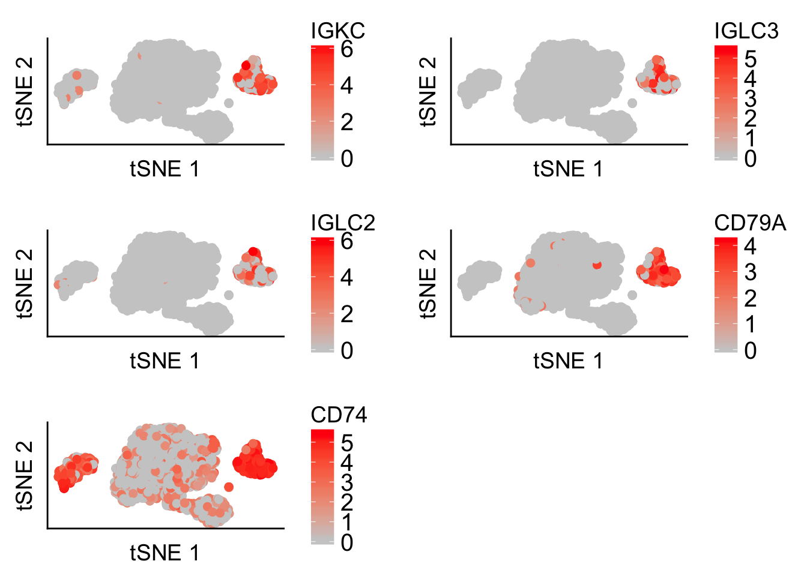
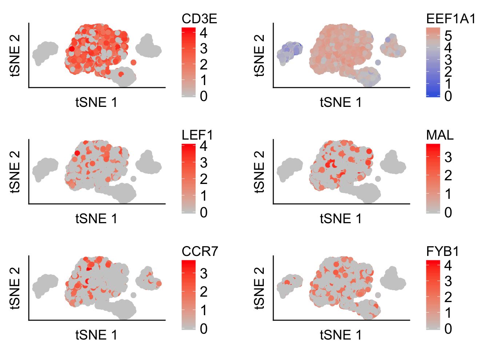

Checking divergence measure on cellular subsets
Kushal K Dey
8/24/2017
Processing Data
In this script, we check how the divergence measure performance on the sorted immune cells subsets.
seuratObj_TFH_global <- get(load("../output/seurat_10X_genomics_sorted_with_tsne.rda"))data <- seuratObj_TFH_global@raw.datafac <- sapply(colnames(data), function(x) return(paste0(head(strsplit(x, "[_]")[[1]], -1), collapse="_")))counts_mat <- apply(data, 1, function(x) return(tapply(x, fac, sum)))counts_mat_prop <- t(apply(counts_mat, 1, function(x)
{
y <- (x+1e-07)
z <- y/sum(y)
return(z)
}))tab <- mygene::queryMany(colnames(counts_mat_prop), scopes="ensembl.gene", fields=c("symbol", "name", "summary"), species="human");## Querying chunk 1## Querying chunk 2## Querying chunk 3## Querying chunk 4## Querying chunk 5## Querying chunk 6## Querying chunk 7## Querying chunk 8## Querying chunk 9## Querying chunk 10## Querying chunk 11## Querying chunk 12## Querying chunk 13## Querying chunk 14## Querying chunk 15## Querying chunk 16## Querying chunk 17## Querying chunk 18## Querying chunk 19## Querying chunk 20## Querying chunk 21## Querying chunk 22## Querying chunk 23## Querying chunk 24## Querying chunk 25## Querying chunk 26## Querying chunk 27## Querying chunk 28## Querying chunk 29## Querying chunk 30## Querying chunk 31## Querying chunk 32## Querying chunk 33## Querying chunk 34## Finished
## Pass returnall=TRUE to return lists of duplicate or missing query terms.idx <- match(tab$query, colnames(counts_mat_prop))
counts_mat_prop_2 <- counts_mat_prop[, idx]symbols <- tab$symbol
colnames(counts_mat_prop_2) <- symbols
idx2 <- which(!is.na(match(substring(symbols, 1, 2), c("RP", "MT", "RN"))))
counts_mat_prop_3 <- counts_mat_prop_2[, -idx2]We now perform ExtractTopFeatures() on these as theta matrices.
out <- ExtractTopFeatures(t(counts_mat_prop_3), top_features = 100, method = "poisson", options = "max")
indices <- out$indices
scores <- out$scoresQQplot
par(mfrow = c(3,3))
for(m in 1:dim(scores)[1]){
qqnorm(log(scores[m,]+1), col="red", pch=20, cex = 1, main = paste0("QQplot: cluster - ", m))
qqline(log(scores[m,]+1))
}
Scores plot
par(mfrow = c(3,3))
for(m in 1:dim(scores)[1]){
plot(log(1:100), log(scores[m,]+1), col="black", pch=20, ylab = "scores", xlab="top 100 genes (sorted)",
main = paste0("cluster-", m))
}Gene Annotations
The top driving genes
CD14_Monocytes
imp_genes <- apply(indices, 1, function(x) return(colnames(counts_mat_prop_3)[x]))
out <- mygene::queryMany(imp_genes[1:20,1], scopes="symbol", fields=c("symbol", "name", "summary"), species="human");## Finishedtab <- cbind.data.frame(out$symbol[!is.na(out$summary)], out$name[!is.na(out$summary)])
colnames(tab) <- c("symbol", "name")
rownames(tab) <- NULL
tab## symbol name
## 1 S100A8 S100 calcium binding protein A8
## 2 S100A9 S100 calcium binding protein A9
## 3 CST3 cystatin C
## 4 LYZ lysozyme
## 5 TYROBP TYRO protein tyrosine kinase binding protein
## 6 FCN1 ficolin 1
## 7 HLA-DRB1 major histocompatibility complex, class II, DR beta 1
## 8 HLA-DQA1 major histocompatibility complex, class II, DQ alpha 1
## 9 HLA-DQB1 major histocompatibility complex, class II, DQ beta 1
## 10 CFD complement factor D
## 11 FTL ferritin light chain
## 12 CEBPD CCAAT/enhancer binding protein delta
## 13 CD14 CD14 molecule
## 14 LGALS2 galectin 2
## 15 AIF1 allograft inflammatory factor 1
## 16 S100A4 S100 calcium binding protein A4
## 17 HLA-DRB5 major histocompatibility complex, class II, DR beta 5
## 18 HLA-DPB1 major histocompatibility complex, class II, DP beta 1
## 19 CFP complement factor properdinCD19_B cells
out <- mygene::queryMany(imp_genes[1:20,2], scopes="symbol", fields=c("symbol", "name", "summary"), species="human");## Finished
## Pass returnall=TRUE to return lists of duplicate or missing query terms.tab <- cbind.data.frame(out$symbol[!is.na(out$summary)], out$name[!is.na(out$summary)])
colnames(tab) <- c("symbol", "name")
rownames(tab) <- NULL
tab## symbol name
## 1 HLA-DRA major histocompatibility complex, class II, DR alpha
## 2 CD79A CD79a molecule
## 3 CD74 CD74 molecule
## 4 HLA-DQA2 major histocompatibility complex, class II, DQ alpha 2
## 5 MS4A1 membrane spanning 4-domains A1
## 6 TCL1A T-cell leukemia/lymphoma 1A
## 7 VPREB3 V-set pre-B cell surrogate light chain 3
## 8 CD79B CD79b molecule
## 9 IRF8 interferon regulatory factor 8
## 10 P2RX5 purinergic receptor P2X 5
## 11 FCER2 Fc fragment of IgE receptor II
## 12 BANK1 B-cell scaffold protein with ankyrin repeats 1
## 13 PDLIM1 PDZ and LIM domain 1CD4 Helper
out <- mygene::queryMany(imp_genes[1:20,3], scopes="symbol", fields=c("symbol", "name", "summary"), species="human");## Finishedtab <- cbind.data.frame(out$symbol[!is.na(out$summary)], out$name[!is.na(out$summary)])
colnames(tab) <- c("symbol", "name")
rownames(tab) <- NULL
tab## symbol name
## 1 GIMAP7 GTPase, IMAP family member 7
## 2 GIMAP4 GTPase, IMAP family member 4
## 3 CD6 CD6 molecule
## 4 SIRPG signal regulatory protein gamma
## 5 LGALS3BP galectin 3 binding protein
## 6 EEF2 eukaryotic translation elongation factor 2
## 7 IL2RG interleukin 2 receptor subunit gamma
## 8 SLC40A1 solute carrier family 40 member 1
## 9 NMT2 N-myristoyltransferase 2
## 10 MOCS2 molybdenum cofactor synthesis 2
## 11 INPP4B inositol polyphosphate-4-phosphatase type II B
## 12 CMTM8 CKLF like MARVEL transmembrane domain containing 8
## 13 GCSAM germinal center associated signaling and motility
## 14 CMPK1 cytidine/uridine monophosphate kinase 1CD4 Memory
out <- mygene::queryMany(imp_genes[1:20,4], scopes="symbol", fields=c("symbol", "name", "summary"), species="human");## Finished
## Pass returnall=TRUE to return lists of duplicate or missing query terms.tab <- cbind.data.frame(out$symbol[!is.na(out$summary)], out$name[!is.na(out$summary)])
colnames(tab) <- c("symbol", "name")
rownames(tab) <- NULL
tab## symbol name
## 1 CD3D CD3d molecule
## 2 LTB lymphotoxin beta
## 3 TNFRSF4 TNF receptor superfamily member 4
## 4 PTGER2 prostaglandin E receptor 2
## 5 IL7R interleukin 7 receptor
## 6 TNFRSF25 TNF receptor superfamily member 25
## 7 RDH11 retinol dehydrogenase 11 (all-trans/9-cis/11-cis)
## 8 CCDC65 coiled-coil domain containing 65
## 9 CORO1B coronin 1B
## 10 CD84 CD84 molecule
## 11 TAB2 TGF-beta activated kinase 1/MAP3K7 binding protein 2
## 12 ST6GALNAC1 ST6 N-acetylgalactosaminide alpha-2,6-sialyltransferase 1CD4 Naive
out <- mygene::queryMany(imp_genes[1:20,5], scopes="symbol", fields=c("symbol", "name", "summary"), species="human");## Finishedtab <- cbind.data.frame(out$symbol[!is.na(out$summary)], out$name[!is.na(out$summary)])
colnames(tab) <- c("symbol", "name")
rownames(tab) <- NULL
tab## symbol name
## 1 CD3E CD3e molecule
## 2 EEF1A1 eukaryotic translation elongation factor 1 alpha 1
## 3 LEF1 lymphoid enhancer binding factor 1
## 4 MAL mal, T-cell differentiation protein
## 5 CCR7 C-C motif chemokine receptor 7
## 6 FYB1 FYN binding protein 1
## 7 ITM2A integral membrane protein 2A
## 8 CD27 CD27 molecule
## 9 STMN3 stathmin 3
## 10 BTG1 BTG anti-proliferation factor 1
## 11 CD40LG CD40 ligand
## 12 LDHB lactate dehydrogenase B
## 13 EPHX2 epoxide hydrolase 2
## 14 ACTN1 actinin alpha 1
## 15 NOSIP nitric oxide synthase interacting proteinCD4 Regulatory
out <- mygene::queryMany(imp_genes[1:20,6], scopes="symbol", fields=c("symbol", "name", "summary"), species="human");## Finished
## Pass returnall=TRUE to return lists of duplicate or missing query terms.tab <- cbind.data.frame(out$symbol[!is.na(out$summary)], out$name[!is.na(out$summary)])
colnames(tab) <- c("symbol", "name")
rownames(tab) <- NULL
tab## symbol name
## 1 IL32 interleukin 32
## 2 LAT linker for activation of T-cells
## 3 CD2 CD2 molecule
## 4 AQP3 aquaporin 3 (Gill blood group)
## 5 SPOCK2 SPARC/osteonectin, cwcv and kazal like domains proteoglycan 2
## 6 TMEM173 transmembrane protein 173
## 7 TIGIT T-cell immunoreceptor with Ig and ITIM domains
## 8 LCK LCK proto-oncogene, Src family tyrosine kinase
## 9 CD5 CD5 molecule
## 10 OPTN optineurin
## 11 ID3 inhibitor of DNA binding 3, HLH protein
## 12 ACTB actin beta
## 13 CCR10 C-C motif chemokine receptor 10CD56 NK
out <- mygene::queryMany(imp_genes[1:20,7], scopes="symbol", fields=c("symbol", "name", "summary"), species="human");## Finished
## Pass returnall=TRUE to return lists of duplicate or missing query terms.tab <- cbind.data.frame(out$symbol[!is.na(out$summary)], out$name[!is.na(out$summary)])
colnames(tab) <- c("symbol", "name")
rownames(tab) <- NULL
tab## symbol
## 1 GNLY
## 2 CCL5
## 3 GZMB
## 4 GZMA
## 5 FCER1G
## 6 CST7
## 7 CD7
## 8 CTSW
## 9 KLRB1
## 10 FGFBP2
## 11 MALAT1
## 12 PRF1
## 13 GZMM
## 14 GZMH
## 15 FCGR3A
## 16 KLRD1
## 17 KLRF1
## 18 PTGDS
## name
## 1 granulysin
## 2 C-C motif chemokine ligand 5
## 3 granzyme B
## 4 granzyme A
## 5 Fc fragment of IgE receptor Ig
## 6 cystatin F
## 7 CD7 molecule
## 8 cathepsin W
## 9 killer cell lectin like receptor B1
## 10 fibroblast growth factor binding protein 2
## 11 metastasis associated lung adenocarcinoma transcript 1 (non-protein coding)
## 12 perforin 1
## 13 granzyme M
## 14 granzyme H
## 15 Fc fragment of IgG receptor IIIa
## 16 killer cell lectin like receptor D1
## 17 killer cell lectin like receptor F1
## 18 prostaglandin D2 synthaseCD8 Cytotoxic
out <- mygene::queryMany(imp_genes[1:20,8], scopes="symbol", fields=c("symbol", "name", "summary"), species="human");## Finished
## Pass returnall=TRUE to return lists of duplicate or missing query terms.tab <- cbind.data.frame(out$symbol[!is.na(out$summary)], out$name[!is.na(out$summary)])
colnames(tab) <- c("symbol", "name")
rownames(tab) <- NULL
tab## symbol name
## 1 GZMK granzyme K
## 2 CD8A CD8a molecule
## 3 CD3G CD3g molecule
## 4 RGL4 ral guanine nucleotide dissociation stimulator like 4
## 5 ZCCHC11 zinc finger CCHC-type containing 11
## 6 NUCB2 nucleobindin 2
## 7 B3GNT2 UDP-GlcNAc:betaGal beta-1,3-N-acetylglucosaminyltransferase 2
## 8 NBL1 neuroblastoma 1, DAN family BMP antagonist
## 9 SVIP small VCP interacting protein
## 10 PROCR protein C receptorCD8 Naive Cytotoxic
out <- mygene::queryMany(imp_genes[1:20,9], scopes="symbol", fields=c("symbol", "name", "summary"), species="human");## Finished
## Pass returnall=TRUE to return lists of duplicate or missing query terms.tab <- cbind.data.frame(out$symbol[!is.na(out$summary)], out$name[!is.na(out$summary)])
colnames(tab) <- c("symbol", "name")
rownames(tab) <- NULL
tab## symbol name
## 1 CD8B CD8b molecule
## 2 S100B S100 calcium binding protein B
## 3 CPA5 carboxypeptidase A5
## 4 PASK PAS domain containing serine/threonine kinase
## 5 NELL2 neural EGFL like 2
## 6 PCSK1N proprotein convertase subtilisin/kexin type 1 inhibitor
## 7 RUNX2 runt related transcription factor 2
## 8 EEF1B2 eukaryotic translation elongation factor 1 beta 2
## 9 NR4A1 nuclear receptor subfamily 4 group A member 1
## 10 THEMIS thymocyte selection associated
## 11 CRTAM cytotoxic and regulatory T-cell moleculet-SNE expression pattern for cell subsets
CD14 monocytes - tsne
## FinishedCD19 B cells - tsne
## Finished
## Pass returnall=TRUE to return lists of duplicate or missing query terms.
CD4 helper - tsne
## FinishedCD4 memory - tsne
## FinishedCD4 Naive - tsne
## Finished
CD4 regulatory - tsne
## Finished
## Pass returnall=TRUE to return lists of duplicate or missing query terms.
CD56 NK cells - tsne
## FinishedCD8 cytotoxic - tsne
## Finished
## Pass returnall=TRUE to return lists of duplicate or missing query terms.
CD8 Naive cytotoxic - tsne
## Finished
## Pass returnall=TRUE to return lists of duplicate or missing query terms.This R Markdown site was created with workflowr